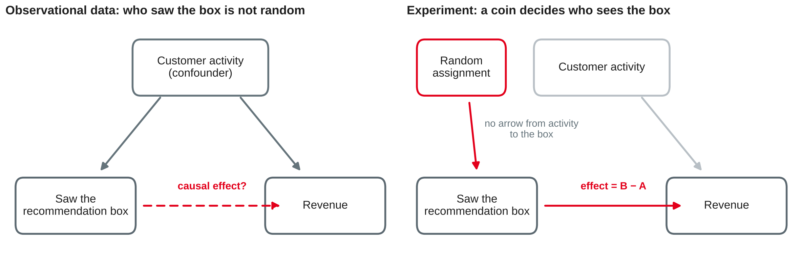
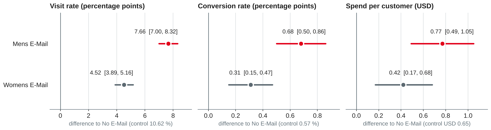
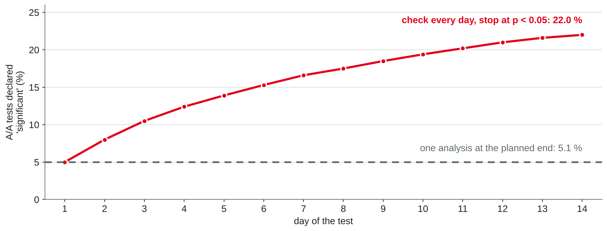

Data Analytics
Causal questions · correlation vs. causation · designing an A/B test · sample size · analysing results · pitfalls · when you cannot experiment
DHBW Mannheim · Data Science and Artificial Intelligence · Semester 5
Today's question: a model tells us who is likely to churn. Does calling them actually keep them? That is a causal question — and it needs a different method.
When a prediction is not enough
| Prediction (sessions 7–8) | Causal question (today) | |
|---|---|---|
| Question | Who will churn? | Does a call reduce churn? |
| Compares | Customers with each other | The same customers with and without the action |
| Data | Historical records | Ideally an experiment |
| Typical method | Classification, regression | Randomised controlled experiment (A/B test) |
| Typical mistake | Leakage | Mistaking correlation for causation |
Own compilation based on Kohavi et al. (2020, Chapter 1) and Provost and Fawcett (2013).

Own illustration based on Kohavi et al. (2020, Chapters 1 and 11).
For each claim: is the causal conclusion justified? If not, name an alternative explanation and say how you would test the claim.
Decide before you look at the data
| Element | Example: confirmation e-mail of the sign-up funnel (session 4) |
|---|---|
| Hypothesis | Sending a shorter e-mail immediately raises the confirmation rate |
| Variants | A: current e-mail (control) · B: short e-mail, sent at once |
| Randomisation unit | User who completed the form |
| Primary metric | Confirmation rate within 7 days |
| Guardrail metrics | Spam complaints, unsubscribe rate, support tickets |
| Sample size and duration | From baseline, minimum effect, α and power — next slides |
| Decision rule | Ship B if the primary metric improves significantly and no guardrail is harmed |
Own example based on Kohavi et al. (2020, Chapters 2 and 7).
Primary metric (OEC)
The one metric the decision is based on. Measurable in the test period, sensitive to the change, aligned with the long-term goal. Kohavi et al. call it the overall evaluation criterion.
Guardrail metrics
Must not get worse: business guardrails (unsubscribes, latency, crashes) and trust guardrails that check the experiment itself (sample ratio).
Diagnostic metrics
Explain why the primary metric moved: opens, clicks, steps of the funnel. Not the basis of the decision.
Based on Kohavi et al. (2020, Chapters 6, 7 and 21).
| Unit | Good for | Watch out |
|---|---|---|
| User (account, customer) | Most product and marketing tests | Users must be identifiable across visits |
| Cookie or device | Anonymous visitors | One person, several devices: mixed experience |
| Session or page view | Invisible back-end changes | Inconsistent experience; users are not independent |
| Cluster (store, city, team) | Interference between users | Few units: low power |
Based on Kohavi et al. (2020, Chapters 14 and 22).
Per variant, with α = 0.05 (two-sided) and power 80 %:
n ≈ 16 σ² / δ² — σ² variance of the metric (for a rate: p(1 − p)), δ the smallest effect worth detecting
| Metric (lab data) | Baseline | Minimum effect δ | n per variant (rule) | n (statsmodels) |
|---|---|---|---|---|
| Visit rate | 10.6 % | +1.0 pp | 15,162 | 15,483 |
| Visit rate | 10.6 % | +0.5 pp | 60,649 | 60,729 |
| Conversion rate | 0.57 % | +0.2 pp | 22,670 | 25,972 |
| Spend per customer | σ = USD 11.59 | +USD 0.20 | 53,715 | 52,701 |
Rule of thumb from Kohavi et al. (2020, Chapter 17); own calculation with statsmodels (Seabold & Perktold, 2010).
from statsmodels.stats.power import NormalIndPower from statsmodels.stats.proportion import proportion_effectsize h = proportion_effectsize(0.116, 0.106) # Cohen's h: 10.6 % -> 11.6 % n = NormalIndPower().solve_power(effect_size=h, alpha=0.05, power=0.8) print(round(n)) # 15483 per variant p, d = 0.106, 0.01 # rule of thumb print(round(16 * p * (1 - p) / d**2)) # 15162 per variant
solve_power solves for whichever argument you leave out — also power for a given nTTestIndPower with effect_size = δ / σOwn example based on Seabold and Perktold (2010) and Kohavi et al. (2020, Chapter 17).
Complete the test plan for the confirmation e-mail from the "Anatomy" slide.
A recap from Stochastics — and a real experiment
For two rates p̂_A (control) and p̂_B (treatment) with n_A and n_B units:
Report the effect with its interval first; the p-value only says whether the interval excludes zero.
Based on Kohavi et al. (2020, Chapter 17).
Hillstrom (2008).
import pandas as pd
from scipy import stats
URL = ("https://hillstorm1.s3.us-east-2.amazonaws.com/"
"hillstorm_no_indices.csv.gz") # copy of Hillstrom (2008)
df = pd.read_csv(URL) # 64,000 rows, 12 columns
counts = df.segment.value_counts()
print(counts) # 21,387 / 21,307 / 21,306
print(stats.chisquare(counts)) # SRM check, expected 1/3 each
cols = ["recency", "history", "newbie", "visit", "conversion", "spend"]
print(df.groupby("segment")[cols].mean())Own example based on Hillstrom (2008), The SciPy community (n.d.-a) and Kohavi et al. (2020, Chapter 21).
from statsmodels.stats.proportion import (proportions_ztest,
confint_proportions_2indep)
ctrl = df[df.segment == "No E-Mail"]
for arm in ["Mens E-Mail", "Womens E-Mail"]:
t = df[df.segment == arm]
for m in ["visit", "conversion"]:
x, n = [t[m].sum(), ctrl[m].sum()], [len(t), len(ctrl)]
p = proportions_ztest(x, n)[1]
ci = confint_proportions_2indep(x[0], n[0], x[1], n[1], method="wald")
print(arm, m, t[m].mean() - ctrl[m].mean(), ci, p)
r = stats.ttest_ind(t.spend, ctrl.spend, equal_var=False) # Welch
print(arm, "spend", t.spend.mean() - ctrl.spend.mean(),
r.confidence_interval(), r.pvalue)Own example based on Seabold and Perktold (2010) and The SciPy community (n.d.-b).

Own analysis with data from Hillstrom (2008).
Why many A/B test results cannot be trusted
stats.chisquare([50421, 48977]) # expected: equal counts
Based on Fabijan et al. (2019) and Kohavi et al. (2020, Chapter 21).

Own simulation based on Johari et al. (2017) and Kohavi et al. (2020, Chapter 3).
from statsmodels.stats.multitest import multipletests reject, p_adj, _, _ = multipletests(p_values, alpha=0.05, method="holm")
Based on Kohavi et al. (2020, Chapter 3), Holm (1979) and Seabold and Perktold (2010).
| Trap | What happens | What to do |
|---|---|---|
| Novelty effect | Users click a new feature because it is new; the effect fades | Run longer, plot the effect by day, compare new vs. returning users |
| Primacy effect | Users need time to get used to a change; the effect grows | Same: look at the trend, not one number |
| No A/A test | The platform itself produces false differences | Run A/A tests: about 5 % should be significant |
| Short-term metric | Clicks up, satisfaction or retention down | Primary metric aligned with the long-term goal; guardrails |
Based on Kohavi et al. (2020, Chapters 3, 19 and 23).
A retailer raises delivery fees in Austria only. Germany is unchanged.
| Orders per 1,000 customers per week | Before | After | Change |
|---|---|---|---|
| Austria (treated) | 52.0 | 47.5 | −4.5 |
| Germany (comparison) | 50.0 | 48.5 | −1.5 |
| Difference-in-differences | −3.0 |
Own example based on Kohavi et al. (2020, Chapter 11).
Work in pairs on the e-mail experiment (Hillstrom, 2008).
Preparation: bring your current notebook and a list of open questions. If you finished the lab today, try worksheet 9, task 7.